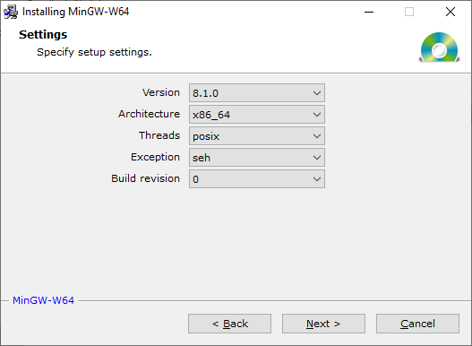
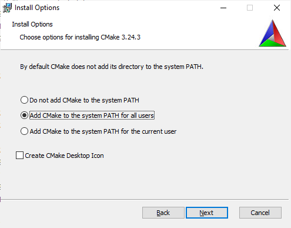
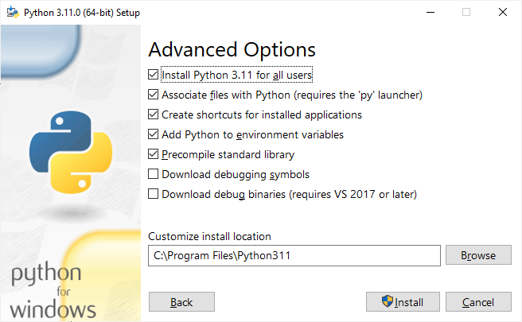

Setting up Cmajor compiler development environment
Requirements
- Microsoft Visual Studio Community Edition 2019
1. Boost (C++ msvc)
Version
1.74
Location:
C:\boost
Sources
boost.org
Extract sources to C:\work\boost_1_74_0 directory.
(For example place boost_1_74_0.7z package in C:\work directory and choose 7-Zip | Extract here)
Build
- Open x64 Native Tools Command Prompt for VS 2019 (can be found from the start menu in Visual Studio 2019 folder)
- Change to C:\work\boost_1_74_0 directory.
-
Bootstrap:
C:\work\boost_1_74_0> bootstrap
-
Compilation:
C:\work\boost_1_74_0> b2 toolset=msvc address-model=64 --build-dir=C:\boost-build-dir --prefix=C:\boost install
-
After compiling C:\boost-build-dir ja C:\work\boost_1_74_0 can be removed.
2. Mingw-w64
Download
From the Download page select MingW-W64-builds.
Version
8.1.0
Installation
-
Installation using these settings:

-
Add C:\Program Files\mingw-w64\x86_64-8.1.0-posix-seh-rt_v6-rev0\mingw64\bin directory to PATH.
3. Boost (C++ mingw-w64)
Version
1.74
Location:
C:\mingw-boost
Sources
boost.org
Extract sources to C:\work\boost_1_74_0 directory.
Build
- Open Windows Terminal (wt.exe) to C:\work\boost_1_74_0 directory:
-
It's assumed that mingw-w64's gcc can be found from PATH: gcc --version
-
Bootstrap:
C:\work\boost_1_74_0> bootstrap gcc
-
Compilation:
C:\work\boost_1_74_0> b2 toolset=gcc address-model=64 --build-dir=C:\mingw-boost-build-dir --prefix=C:\mingw-boost install
-
After compiling C:\mingw-boost-build-dir ja C:\work\boost_1_74_0 can be removed.
4. LLVM binaries
Version
11.0.0
Location:
C:\Program Files\LLVM
Download
From the Download page select Windows (64-bit) link.
This is a direct link: LLVM-11.0.0-win64.exe
Installation
- After installation add C:\Program Files\LLVM\bin directory to PATH.
5. CMake
Version
3.18.4
Location:
C:\Program Files\CMake
Download
From the Download page select cmake-3.18.4-win64-x64.msi link.
This is a direct link: cmake-3.18.4-win64-x64.msi
Installation
-
Installation using these settings:

6. Python
Version
3.9.0
Location
C:\Program Files\Python39
Download
From the Download page select Download Python 3.9.0.
Installation
Installation using these settings:

7. LLVM sources
Version
11.0.0
Location:
C:\llvm-11.0.0.src
Download
From the Download page select LLVM source code.
This is a direct link: llvm-11.0.0.src.tar.xz
Extract package to C:\llvm-11.0.0.src folder.
Compilation
-
Open x64 Native Tools Command Prompt for VS 2019.
-
Change to C:\llvm-11.0.0.src directory.
-
Make directory build:
C:\llvm-11.0.0.src>mkdir build
-
Change to build directory:
C:\llvm-11.0.0.src>cd build
-
Run CMake:
C:\llvm-11.0.0.src\build> cmake -G "Visual Studio 16 2019" -Thost=x64 -DLLVM_TARGETS_TO_BUILD="X86" -DLLVM_ENABLE_EH=On -DLLVM_ENABLE_RTTI=On ..
-
Open C:\llvm-11.0.0.src\build\LLVM.sln solution in Visual Studio 2019.
-
Build solution using Debug/x64 configuration.
-
Build solution using Release/x64 configuration
8. Git for Windows
Versio
2.28.0
Download
Git for Windows
.
9. Cmajor compiler and C++ runtime
Location
C:\work\cmajorm
Download
From https://github.com/slaakko/cmajorm page select Code | https://github.com/slaakko/cmajorm.git
-
Start Git Bash.
-
Change to C:\work directory.
-
Clone cmajorm repository:
git clone https://github.com/slaakko/cmajorm.git
-
Clones repository to cmajorm directory.
Installation
- Make subdirectory C:\work\cmajorm\cmajor\lib
- Make subdirectory C:\work\cmajorm\cmajor\lib\gcc
- Make subdirectory C:\work\cmajorm\cmajor\lib\vs
- Make subdirectory C:\work\cmajorm\cmajor\bin
- Make subdirectory C:\work\cmajorm\cmajor\rts\build\gcc\lib
- Make subdirectory C:\work\cmajorm\cmajor\rts\build\gcc\bin
- Add environment variable CMAJOR_ROOT with value C:\work\cmajorm\cmajor.
- Add C:\work\cmajorm\cmajor\bin directory to PATH.
- Open x64 Native Tools Command Prompt for VS 2019
- Change to C:\work\cmajorm\cmajor\system\ext\pdcurs36\build directory.
- Run build.bat.
- Change to C:\work\cmajorm\cmajor\system\ext\zlib-1.2.11\contrib\masmx64 directory
- Run bld_ml64.bat
- Open C:\work\cmajorm\cmajor\cmajor.sln in Visual Studio 2019.
- Select Debug/x64 configuration.
- Build solution.
- Select Release/x64 configuration.
- Build solution.
- Open Windows Terminal to C:\work\cmajorm\cmajor\bat directory.
- Run install.bat. Does not find all the files, but does not matter for now.
- Open Windows Terminal to C:\work\cmajorm\cmajor\rts\build\gcc directory.
- Run mingw32-make (assumed that can be found from PATH):
C:\work\cmajorm\cmajor\rts\build\gcc> mingw32-make
- Run mingw32-make install:
C:\work\cmajorm\cmajor\rts\build\gcc> mingw32-make install
10. Unicode
Download
Download Unicode 12.1 Character Database: ucd.all.flat.zip
and extract it to C:\work\cmajorm\cmajor\unicode directory.
Installation
- Open Windows Terminal to C:\work\cmajorm\cmajor\unicode directory.
- Run makecmajorucd. Makes cmajor_ucd.bin Unicode database for Cmajor:
C:\work\cmajorm\cmajor\unicode> makecmajorucd
11. Cmajor system libraries
Installation
- Open Windows Terminal to C:\work\cmajorm\cmajor\system\platform\windows directory.
- Build System library using the debug configuration (LLVM):
C:\work\cmajorm\cmajor\system\platform\windows> cmc -u -v System.cms
- Build System library using the release configuration (LLVM):
C:\work\cmajorm\cmajor\system\platform\windows> cmc -u -v -c=release System.cms
- Build System library using the debug configuration (C++):
C:\work\cmajorm\cmajor\system\platform\windows> cppcmc -st -u -v System.cms
- Build System library using the releaseconfiguration (C++):
C:\work\cmajorm\cmajor\system\platform\windows> cppcmc -st -u -v -c=release System.cms
12. Cmajor Visual Studio extension
- Open C:\work\cmajorm\cmajor\task\task.sln in Visual Studio 2019
- Select Debug|Any CPU -konfiguraaatio
- Build solution
- Select Release|Any CPU -konfiguraaatio
- Build solution
- Open Windows Terminal to C:\work\cmajorm\cmajor\bat directory.
- Run install.bat: copies C:\work\cmajorm\cmajor\task\bin\Release\CmajorTasks.dll to bin directory.
- Change to C:\work\cmajorm\cmajor\vs\2019 directory.
- Run CreateCmajorCPS.exe:
C:\work\cmajorm\cmajor\vs\2019>CreateCmajorCPS
- Close Windows Terminal
- Right click C:\work\cmajorm\cmajor\vs\2019\cmajor.vsix and select install.
13. Cmajor tools
- Open Windows Terminal to C:\work\cmajorm\cmajor\projects\cm directory.
- Compile Cm.cms solution using debug config:
C:\work\cmajorm\cmajor\projects\cm>cmc -u -v Cm.cms
- Compile Cm.cms solution using release config:
C:\work\cmajorm\cmajor\projects\cm>cmc -u -v -c=release Cm.cms
- Change to C:\work\cmajorm\cmajor\projects\tools\soulcm\scmlg directory.
- Compile scmlg.cmp project using debug config:
cmc -u -v scmlg.cmp
- Compile scmlg.cmp project using release config:
cmc -u -v -c=release scmlg.cmp
- Change to C:\work\cmajorm\cmajor\projects\tools\soulcm\scmpg directory.
- Compile scmpg.cmp project using debug config:
cmc -u -v scmpg.cmp
- Compile scmpg.cmp project using release config:
cmc -u -v -c=release scmpg.cmp
- Change to C:\work\cmajorm\cmajor\projects\tools\soulcm\scm2html directory.
- Compile scm2html.cmp project using debug config:
cmc -u -v scm2html.cmp
- Compile scm2html.cmp project using release config:
cmc -u -v -c=release scm2html.cmp
- Change to C:\work\cmajorm\cmajor\projects\tools\spring directory.
- Compile spring.cmp project using debug config:
cmc -u -v spring.cmp
- Compile spring.cmp project using release config:
cmc -u -v -c=release spring.cmp
- Change to C:\work\cmajorm\cmajor\projects\tools\supd directory.
- Compile supd.cmp project using debug config:
cmc -u -v supd.cmp
- Compile supd.cmp project using release config:
cmc -u -v -c=release supd.cmp
14. Cmajor examples
- Open Windows Terminal to C:\work\cmajorm\cmajor\projects\examples directory.
- Compile examples.cms solution using debug config:
C:\work\cmajorm\cmajor\projects\examples>cmc -u -v examples.cms
- Compile examples.cms solution using release config:
C:\work\cmajorm\cmajor\projects\examples>cmc -u -v -c=release examples.cms
15. System X
- Open Windows Terminal to C:\work\cmajorm\cmajor\projects\cmsx directory.
- Compile cmsx.cms solution using debug config:
C:\work\cmajorm\cmajor\projects\cmsx> cmc -u -v cmsx.cms
- Compile cmsx.cms solution using release config:
C:\work\cmajorm\cmajor\projects\cmsx> cmc -u -v -c=release cmsx.cms
16. Installation
- Open Windows Terminal to C:\work\cmajorm\cmajor\bat directory.
- Run install.bat. Changed files are copied to C:\work\cmajorm\cmajor\bin and C:\work\cmajorm\cmajor\lib directories.
All except cmajor.vsix and cmsxpg.exe should now be found.